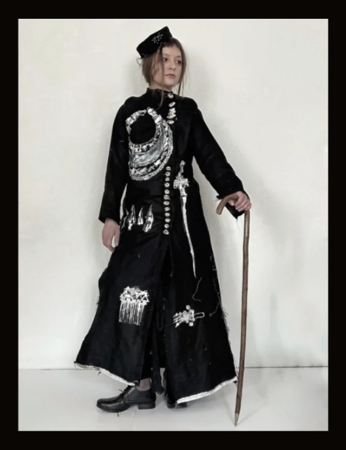
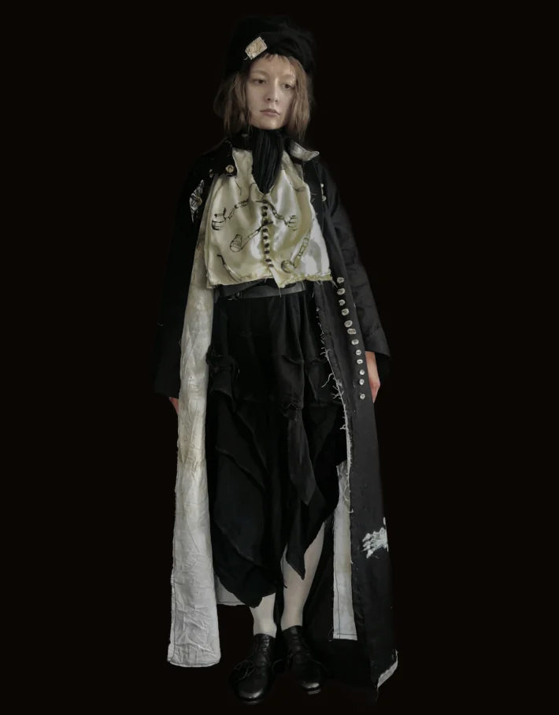
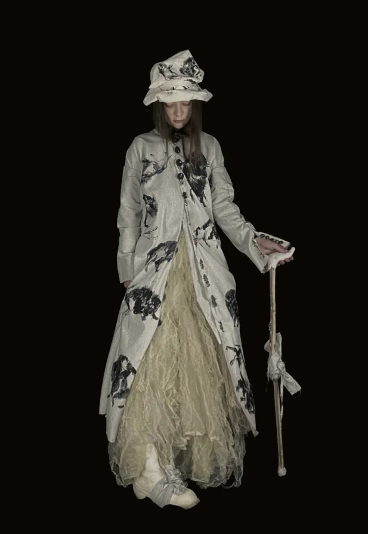
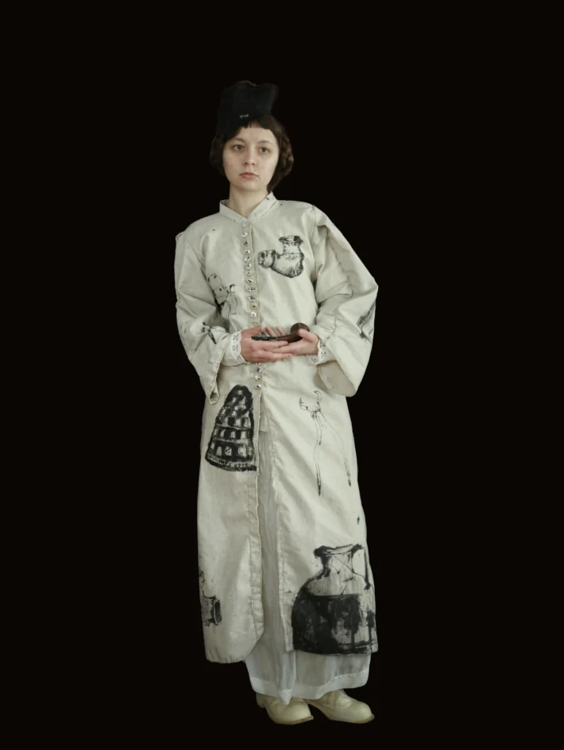
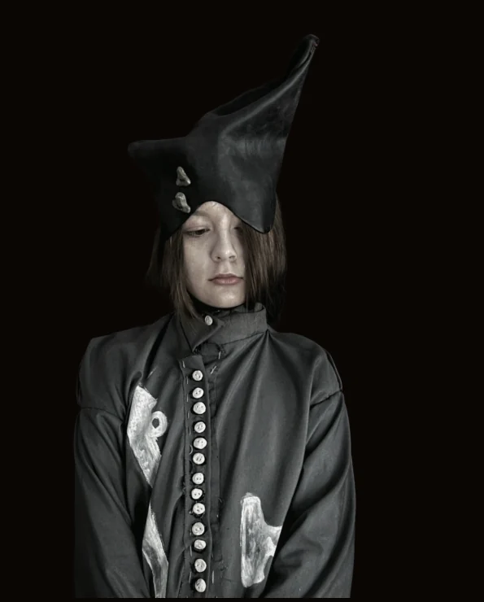
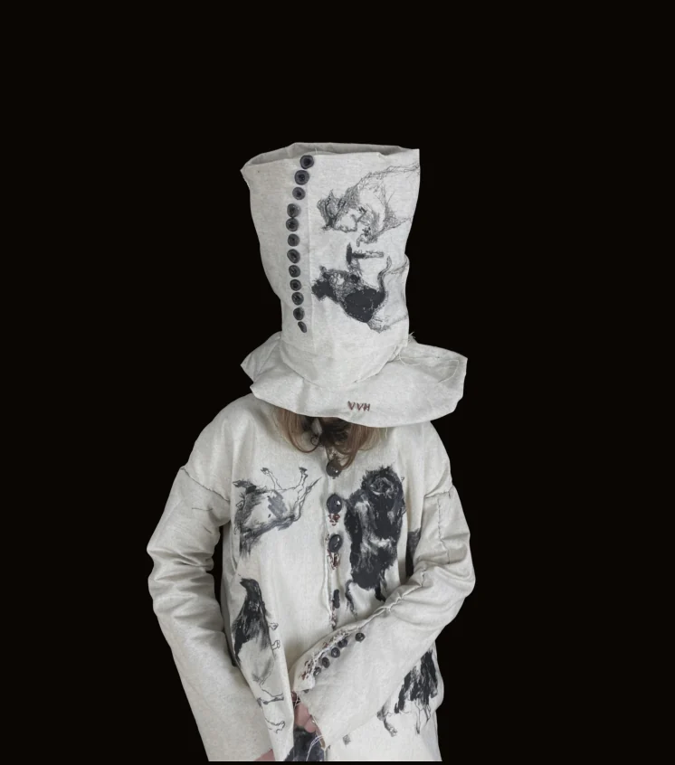

Eigene textile Sprache
Handgenähte Kleidungsstücke, tragbare Objekte, Kopfbedeckungen, handgeformte Knöpfe und Malerei direkt auf Stoff ergeben bereits eine erkennbare Handschrift.
 Studienfinder
Stand 01.10.2026
Studienfinder
Stand 01.10.2026
VERONIKA HORYTSKA · STUDIUM 2027
Diese Seite übersetzt das deutsche Bewerbungschaos in einen klaren Plan. Alle Fristen und Anforderungen stammen aus offiziellen Hochschulquellen; die Portfolio-Matches sind eine Einschätzung auf Basis deiner vorhandenen Arbeiten.
Portfolio-Match ≠ Zulassungswahrscheinlichkeit. Es beschreibt nur, wie gut dein heutiges Portfolio zum Profil des Studiengangs passt.



01 · JETZT WICHTIG
Automatisch nach dem nächsten Termin sortiert. Rot bedeutet: nicht liegen lassen.
02 · ORTE
Die Karte ist schematisch. Ein Punkt öffnet alle passenden Programme der Stadt.
03 · STUDIENGÄNGE
04 · DEIN PORTFOLIO
Bewertung aus Sicht einer Bewerbung für Textil/Mode/Kostüm, nicht als allgemeine Kunstnote.
Handgenähte Kleidungsstücke, tragbare Objekte, Kopfbedeckungen, handgeformte Knöpfe und Malerei direkt auf Stoff ergeben bereits eine erkennbare Handschrift.
Die Arbeiten liegen zwischen Kleidung, Objekt und Bild. Das passt besonders gut zu Textilkunst, experimentellem Mode- und Kostümdesign.
Für Mode fehlen noch sichtbare Entwicklungsschritte: Skizzen, Silhouetten-Varianten, Recherche, Materialtests, Fehlversuche, Prototypen und Entscheidungen vom ersten Gedanken bis zum fertigen Teil.
Fotografiere Schnittentwicklung, Nähte, Innenverarbeitung, Probeteile/Toiles und technische Zeichnungen. Das macht handwerkliches Können für Kommissionen sofort lesbar.
3–5 zusammengehörige Looks mit gemeinsamer Idee würden die Brücke von Einzelobjekten zu Modedesign deutlich stärken.
Die Malerei ist kein Umweg: Sie belegt Farbe, Figur, Komposition und eigenständiges Bilddenken. Für Mode/Textil sollte sie aber die textile Arbeit unterstützen, nicht dominieren.




05 · DEIN PLAN
Häkchen werden nur auf diesem Gerät im Browser gespeichert.
06 · HILFE
Nutze Beratung vor der Abgabe. Das ist bei Kunst- und Designhochschulen normal und sinnvoll.
DATENQUALITÄT
Fristen können von Hochschulen geändert werden. Diese Seite wurde am 01.10.2026 gegen offizielle Hochschulquellen geprüft. Jede Karte enthält den direkten Quellenlink. Bei widersprüchlichen Angaben wird die aktuellere zentrale Bewerbungsseite bevorzugt.